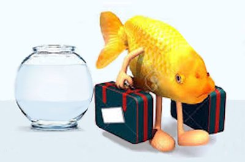

"You wander from room to room hunting for the diamond that is already around your neck." --Rumi
I hear from a lot of spiritual devotees, and even more than usual lately, what with the BATGAP interview and all.
And I’m sure you’ll be unsurprised to learn that they want something.
Of course you know what that something is.
Yep.
Enlightenment.
They want it. They reeeeaaallly want it.
Enough to dedicate years to hunting it, trying to figure out its ways, hoping lightning will strike them the same way it did Tolle and Byron Katie. Enough to attend satsangs and retreats so that some teacher’s supposed wisdom might be contagious. Meditating. Inquiring and pulling apart thoughts and feelings to within an inch of their lives.
Enough to be down on themselves and blue and ashamed because despite all that, awakening doesn’t seem to have happened.
It’s exhausting just writing about. Imagine what it must be like to live it, focusing so much of one’s one wild and precious life on attaining…
Well, what, exactly?
Perfect bliss? No suffering? A desireless state?
Can one achieve a “desireless state” by desiring something so intently?
Can one suffer less by enduring so much dissatisfaction with what’s already here, while waiting, trying and hoping for something else?
Can one achieve perfect stays-forever bliss when everything on this planet comes and goes? Does it make sense that bliss, perfect or not, is the one exception?
Perhaps there are a whole lot of people out there earnestly chasing something that's unobtainable.
And the question rarely raised is…
What do they want this for?
What's the big deal?
I mean, what do seekers imagine they’ll have once they’ve gotten themselves a share of this voodoo magic?
Are they thinking that they’ll be special, elite, superior to all the sad loser others who haven’t scored in the awakening department?
Man I hope not. Because that doesn’t sound particularly enlightened or ego-free now, does it?
Is it a sense of doing things wrong, living wrong, not being deserving?
Well, what are the odds that consciousness, awareness, the universe, god or whatever name is applied, sits around with nothing to do but punish those that don’t fall in line, or has any thought of good/bad, right/wrong, should/shouldn’t?
“Deserving” is a man-made concept, and as is typical for us wacky humans, it’s a crazy one.
Because existence has created us. Why would it suddenly have a problem with us as we are, enlightened or not?
Ok then, how about the sense of missing out- could that be the driving force behind all this yearning?
How about if we ask the enlightenment hounds, since they've studied and read up on so much about all this…
Is “missing out” even possible?
Thought may say so, and a “sense” may be generously provided, but…
Here we are in the present.
Exactly what is missing?
That so-called “Sense” keeps otherwise perceptive folks from noticing that what's missing is... nothing. Nothing is missing.
So then, the only other possible driver for seeking enlightenment is the desire to not hurt.
Let’s be honest, this is the only real reason anyone gives a flying potato about waking up.
People want to feel better, to not get angry, not be afraid, not cry. People want to control thoughts, be calm, be untriggered, and as one of my clients says, be “happy for no reason.”
People want to choose their preferred feeling.
And then they want to stay in that feeling forever and ever.
Never mind that the chasing of this unicorn makes them specifically unhappy.
This is the most common falsehood about this enlightenment business.
Because it makes enlightenment no different than wine or sugar or any other drug- just a way to attain and hold on to a preferred feeling state.
And all that focus on a feel-better goal, and the failure to attain it, conveniently creates a sense of the self as real.
Which is the exact opposite of the enlightenment being sought.
Seeking actually prevents the desired goal from being achieved.
Now I realize that my saying this may infuriate or scandalize many Mind-Tickler readers.
So let me make it up to you.
Have you considered the possibility that the awakening you seek is already here? That you already have what you’ve been chasing?
Could it be the only thing in the way of your knowing this is the thought, “I’m not enlightened?”
Maybe you can take a break from all those podcasts and retreats, have a life, experience whatever feeling happens to temporarily blow through in all its glory,
And let it just be.
Why not?
As we’ve said here many times, maybe this is already it.
Labeled “enlightened” or not.
Nowhere to go, nothing to attain, nothing wrong with you as you are.
Which, paradoxically, might be exactly the awakening you’ve been working so hard for, for so long.
Here it is!
Put your feet up, have some bonbons, get some sun.
May as well enjoy whatever’s here.
After all, just like that sun and the bonbons,
it won’t last.
And yet it is all there is, and complete right now.
Enlightenment- The Hunt
